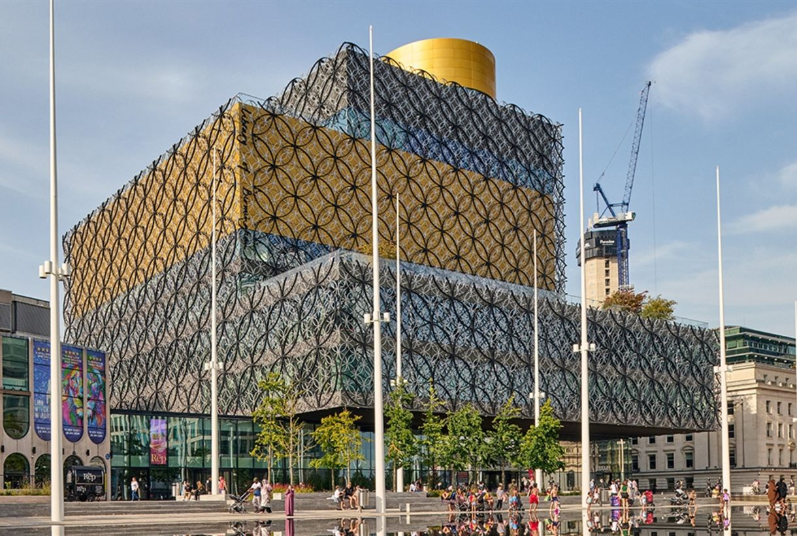
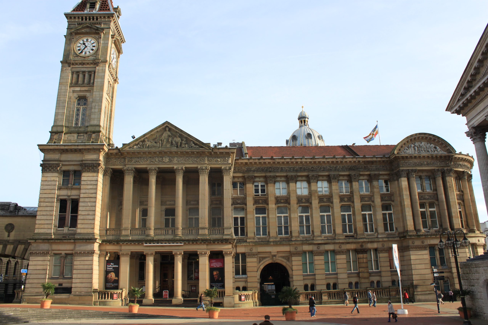

Things to do!
The Library of Birmingham!
The Library of Birmingham is a prominent cultural and architectural landmark in the UK, known for its innovative design and extensive resources. Opened in 2013, it serves as a hub for knowledge, creativity, and community engagement. The library features a vast collection of books, archives, and digital resources, alongside spaces for reading, studying, and events. It also houses various exhibitions and offers programs that promote literacy and lifelong learning, making it a vital asset for both residents and visitors
Cadbury World!

Cadbury World in Birmingham is a popular visitor attraction dedicated to the history and production of chocolate, particularly the iconic Cadbury brand. Located near the original Cadbury factory, the experience offers an immersive journey through the chocolate-making process, interactive exhibits, and engaging storytelling about the Cadbury family and their contributions to the chocolate industry. Visitors can enjoy chocolate-making demonstrations, sample delicious treats, and explore the charming themed areas, making it a delightful destination for families and chocolate lovers alike.
Museum and Art Gallery!
The Birmingham Museum and Art Gallery (BMAG) is a must-visit spot in the city, packed with fascinating art and history. Opened in 1885, it showcases everything from stunning Pre-Raphaelite paintings to cool archaeology finds. With its beautiful architecture and fun exhibits, there's something for everyone, whether you're an art lover or just looking to learn more about the local culture. Plus, they host plenty of events and activities, making it a lively place to explore and enjoy!